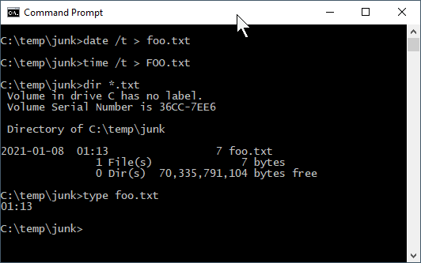

1 Week 1
Rendered at 2022-01-07 02:26:26
Topics:
- Getting started on terminal server 4
- Introduction to R/RStudio/R Markdown
- R data types
- R data structures
- File systems
- Data manipulation in the
tidyverse -
Data sets:
- Employee turnover data
Today’s lessons will cover getting started with computing at CSDE, and quickly introduce R, RStudio, and R Markdown.
It is assumed that students in this course have a basic working knowledge of using R, including how to create variables with the assignment operator (“<-”), and how to run simple functions(e.g., mean(dat$age)). Often in courses that include using R for statistical analysis, some of the following foundations are not explained fully. This section is not intended to be a comprehensive treatment of R data types and structures, but should provide some background for students who are either relatively new at using R or who have not had a systematic introduction.
The other main topic for today is tidyverse, which refers to a related set of R packages for data management, analysis, and display. See Hadley Wickham’s tidy tools manifesto for the logic behind the suite of tools. For a brief description of the specific R packages, see Tidyverse packages. This is not intended to be a complete introduction to the tidyverse, but should provide sufficient background for data handling to support most of the technical aspects of the rest of the course and CSDE 533.
1.1 Getting started on Terminal Server 4
First, if you are not on campus, make sure you have the Husky OnNet VPN application running and have connected to the UW network. You should see the f5 icon in your task area:

Connect to TS4: csde-ts4.csde.washington.edu
If you are using the Windows Remote Desktop Protocol (RDP) connection, your connection parameters should look like this:

If you are using mRemoteNG, the connection parameters will match this:

Once you are connected you should see a number of icons on the desktop and application shortcuts in the Start area.


Open a Windows Explorer (if you are running RDP in full screen mode you should be able to use the key combination Win-E).
Before doing anything, let’s change some of the annoying default settings of the Windows Explorer. Tap File > Options. In the View tab, make sure that Always show menus is checked and Hide extensions for known file types is unchecked. The latter setting is very important because we want to see the complete file name for all files at all times.

Click Apply to Folders so that these settings become default. Click Yes to the next dialog.

Now let’s make a folder for the files in this course.
Navigate to This PC:
You should see the H: drive. This is is the mapped drive that links to your U Drive, and is the place where all of the data for this course is to be stored. Do not store any data on the C: drive! The C: drive can be wiped without any prior notification.
Be very careful with your files on the U Drive! If you delete files, there is no “undo” functionality. When you are deleting files, you will get a warning that you should take seriously:

Navigate into H: and create a new folder named csde502_winter_2022. Note the use of lowercase letters and underscores rather than spaces. This will be discussed in the section on file systems later in this lesson.

1.2 Introduction to R Markdown in RStudio
1.2.1 Create a project
Now we will use RStudio to create the first R Markdown source file and render it to HTML.
Start RStudio by either dbl-clicking the desktop shortcut or navigating to the alphabetical R section of the Start menu:

A brief aside: install R packages.
To get started, because it usually takes some time to install, open a second RStudio session and at the console, to install tidyverse, the other packages for CSDE 502 and 533, and for this lesson, download the file packages.R.
Open the file in your second RStudio session and in the upper right of the source code pane, click Source > Source.

Now continue on with the lesson in your original RStudio session…..
Create a new project (File > New Project...).
Since we just created the directory to house the project, select Existing Directory.
Navigate to that directory and select Open.

Click Create Project.

You will now have a blank project with only the project file.

1.2.2 Create an R Markdown file from built-in RStudio functionality
Let’s make an R Markdown file (File > New File > R Markdown...).

Do not change any of the metadata … this is just for a quick example.

Click OK and then name the file week_01.Rmd.

1.2.2.1 Render the Rmd file as HTML
At the console prompt, enter R Markdown::render("W and tap the TAB key. This should bring up a list of files that have the character “w” in the file name. Click week_01.Rmd.
The syntax here means “run the render() function from the R Markdown package on the file week_01.Rmd”

After a few moments, the process should complete with a message that the output has been created.

If the HTML page does not open automatically, look for week_01.html in the list of files. Click it and select View in Web Browser.

You will now see the bare-bones HTML file.

Compare the output of this file with the source code in week_01.Rmd. Note there are section headers that begin with hash marks, and R code is indicated with the starting characters
```{r}
and the ending characters
```
Next, we will explore some enhancements to the basic R Markdown syntax.
1.2.3 Create an R Markdown file with some enhancements
Download this version of week_01.Rmd and overwrite the version you just created.
If RStudio prints a message that some packages are required but are not installed, click Install.

Change line 3 to include your name and e-mail address as shown.
1.2.3.1 Render and view the enhanced output
Repeat the rendering process (R Markdown::render("Week_01.Rmd"))
The new HTML file has a number of enhancements, including a mailto: hyperlink for your name, a table of contents at the upper left, a table that is easier to read, a Leaflet map, captions and cross-references for the figures and table, an image derived from a PNG file referenced by a URL, the code used to generate various parts of the document that are produced by R code, and the complete source code for the document. A downloadable version of the rendered file: week_01.html.

Including the source code for the document is especially useful for readers of your documents because it lets them see exactly what you did. An entire research chain can be documented in this way, from reading in raw data, performing data cleaning and analysis, and generating results.
1.3 R data types
There are six fundamental data types in R:
- logical
- numeric
- integer
- complex
- character
- raw
The most atomic object in R will exist having one of those data types, described below. An atomic object of the data type can have a value, NA which represents an observation with no data (e.g., a missing measurement), or NULL which isn’t really a value at all, but can still have the data type class.
You will encounter other data types, such as Date or POSIXct if you are working with dates or time stamps. These other data types are extensions of the fundamental data types.
To determine what data type an object is, use is(obj), str(obj), or class(obj).
## [1] "character" "vector" "data.frameRowLabels"
## [4] "SuperClassMethod"## logi TRUE
## NULL## [1] "numeric"
print(class(as.integer(1000)))## [1] "integer"
n <- as.numeric(999999999999999999999)
print(class(n))## [1] "numeric"1.3.1 Logical
Use logical values for characteristics that are either TRUE or FALSE. Note that if logical elements can also have an NA value if the observation is missing. In the following examples,
# evaluate as logical, test whether 1 is greater than two
a <- 1 > 2
# create two numerical values, one being NA, representing ages
age_john <- 39
age_jane <- NA
# logical NA from Jane's undefined age
(jo <- age_john > 50)## [1] FALSE
(ja <- age_jane > 50)## [1] NALogical values are often expressed in binary format as 0 = FALSE and =TRUE`. in R these values are interconvertible. Other software (e.g., Excel, MS Access) may convert logical values to numbers that you do not expect.
(t <- as.logical(1))## [1] TRUE
(f <- as.logical(0))## [1] FALSE1.3.2 Numeric
Numeric values are numbers with range about 2e-308 to 2e+308, depending on the computer you are using. You can see the possible range by entering .Machine at the R console. These can also include decimals. For more information, see Double-precision floating-point format
1.3.3 Integer
Integer values are numerical, but can only take on whole, rather than fractional values, and have a truncated range compared to numeric. For example, see below, if we try to create an integer that is out of range. The object we created is an integer, but because it is out of range, is value is set to NA.
i <- as.integer(999999999999999999999)## Warning: NAs introduced by coercion to integer range## [1] "integer"1.3.4 Complex
The complex type is used in mathematics and you are unlikely to use it in applied social science research unless you get into some heavy statistics. See Complex number for a full treatment.
1.3.5 Character
Character data include the full set of keys on your keyboard that print out a character, typically [A-Z], [a-z], [0-9], punctuation, etc. The full set of ASCII characters is supported, e.g. the accent aigu in Café:
## [1] "character"Also numbers can function as characters. Be careful in converting between numerical and character versions. For example, see these ZIP codes:
# this is a character
my_zip <- "98115"
# it is not numeric.
my_zip + 2## Error in my_zip + 2: non-numeric argument to binary operator
# we can convert it to numeric, although it would be silly to do with ZIP codes, which are nominal values
as.numeric(my_zip) + 2## [1] 98117
# Boston has ZIP codes starting with zeros
boston_zip <- "02134"
as.numeric(boston_zip)## [1] 21341.4 R data structures

There are 5 basic data structures in R, as shown in the graphic:
- vector
- matrix
- array
- list
- data frame
In addition, the factor data type is very important
1.4.1 Vector
A vector is an ordered set of elements of one or more elements of the same data type and are created using the c() constructor function. For example, a single value is a vector:
# create a vector of length 1
a <- 1
is(a)## [1] "numeric" "vector"If you try creating a vector with mixed data types, you may get unexpected results; mixing character elements with other type elements will result in character representations, e.g.,
## [1] "1" "a" "TRUE" "7a"Results will depend on the data type you are mixing, for example because logical values can be expressed numerically, the TRUE and FALSE values are converted to 1 and 0, respectively.
(c(1:3, TRUE, FALSE))## [1] 1 2 3 1 0But if a character is added, all elements are converted to characters.
c(1:3, TRUE, FALSE, "awesome!")## [1] "1" "2" "3" "TRUE" "FALSE" "awesome!"Order is important, i.e.,
1, 2, 3 is not the same as 1, 3, 2
R will maintain the order of elements in vectors unless a process is initiated that changes the order of those elements:
# a vector
(v <- c(1, 3, 2))## [1] 1 3 2
(sort(v))## [1] 1 2 3You can get some information about vectors, such as length and data type:
## [1] 1000
class(normvec1000)## [1] "numeric"
class(normvec1000 > 1)## [1] "logical"Elements of vectors are specified with their index number (1 .. n):
v <- seq(from = 0, to = 10, by = 2)
v[4]## [1] 61.4.2 Matrix
A matrix is like a vector, in that it an contain only one data type, but it is two-dimensional, having rows and columns. A simple example:
# make a vector 1 to 100
(v <- 1:100)## [1] 1 2 3 4 5 6 7 8 9 10 11 12 13 14 15 16 17 18
## [19] 19 20 21 22 23 24 25 26 27 28 29 30 31 32 33 34 35 36
## [37] 37 38 39 40 41 42 43 44 45 46 47 48 49 50 51 52 53 54
## [55] 55 56 57 58 59 60 61 62 63 64 65 66 67 68 69 70 71 72
## [73] 73 74 75 76 77 78 79 80 81 82 83 84 85 86 87 88 89 90
## [91] 91 92 93 94 95 96 97 98 99 100
# load to a matrix
(m1 <- matrix(v, ncol = 10, byrow = TRUE))## [,1] [,2] [,3] [,4] [,5] [,6] [,7] [,8] [,9] [,10]
## [1,] 1 2 3 4 5 6 7 8 9 10
## [2,] 11 12 13 14 15 16 17 18 19 20
## [3,] 21 22 23 24 25 26 27 28 29 30
## [4,] 31 32 33 34 35 36 37 38 39 40
## [5,] 41 42 43 44 45 46 47 48 49 50
## [6,] 51 52 53 54 55 56 57 58 59 60
## [7,] 61 62 63 64 65 66 67 68 69 70
## [8,] 71 72 73 74 75 76 77 78 79 80
## [9,] 81 82 83 84 85 86 87 88 89 90
## [10,] 91 92 93 94 95 96 97 98 99 100
# different r, c ordering
(m2 <- matrix(v, ncol = 10, byrow = FALSE))## [,1] [,2] [,3] [,4] [,5] [,6] [,7] [,8] [,9] [,10]
## [1,] 1 11 21 31 41 51 61 71 81 91
## [2,] 2 12 22 32 42 52 62 72 82 92
## [3,] 3 13 23 33 43 53 63 73 83 93
## [4,] 4 14 24 34 44 54 64 74 84 94
## [5,] 5 15 25 35 45 55 65 75 85 95
## [6,] 6 16 26 36 46 56 66 76 86 96
## [7,] 7 17 27 37 47 57 67 77 87 97
## [8,] 8 18 28 38 48 58 68 78 88 98
## [9,] 9 19 29 39 49 59 69 79 89 99
## [10,] 10 20 30 40 50 60 70 80 90 100If you try to force a vector into a matrix whose row \(\times\) col length does not match the length of the vector, the elements will be recycled, which may not be what you want. At least R will give you a warning.
(m3 <- matrix(letters, ncol = 10, nrow = 10))## Warning in matrix(letters, ncol = 10, nrow = 10): data length [26] is not a sub-
## multiple or multiple of the number of rows [10]## [,1] [,2] [,3] [,4] [,5] [,6] [,7] [,8] [,9] [,10]
## [1,] "a" "k" "u" "e" "o" "y" "i" "s" "c" "m"
## [2,] "b" "l" "v" "f" "p" "z" "j" "t" "d" "n"
## [3,] "c" "m" "w" "g" "q" "a" "k" "u" "e" "o"
## [4,] "d" "n" "x" "h" "r" "b" "l" "v" "f" "p"
## [5,] "e" "o" "y" "i" "s" "c" "m" "w" "g" "q"
## [6,] "f" "p" "z" "j" "t" "d" "n" "x" "h" "r"
## [7,] "g" "q" "a" "k" "u" "e" "o" "y" "i" "s"
## [8,] "h" "r" "b" "l" "v" "f" "p" "z" "j" "t"
## [9,] "i" "s" "c" "m" "w" "g" "q" "a" "k" "u"
## [10,] "j" "t" "d" "n" "x" "h" "r" "b" "l" "v"1.4.3 Array
An array is similar to matrix, but it can have more than one dimension. These can be useful for analyzing time series data or other multidimensional data. We will not be using array data in this course, but a simple example of creating and viewing the contents of an array:
## , , 1
##
## [,1] [,2] [,3]
## [1,] 1 4 7
## [2,] 2 5 8
## [3,] 3 6 9
##
## , , 2
##
## [,1] [,2] [,3]
## [1,] 10 13 16
## [2,] 11 14 17
## [3,] 12 15 18
##
## , , 3
##
## [,1] [,2] [,3]
## [1,] 19 22 25
## [2,] 20 23 26
## [3,] 21 24 27
# array index is r, c, m (row, column, matrix), e.g., row 1 column 2 matrix 3:
(a[1,2,3])## [1] 221.4.4 List
R lists are ordered collections of objects that do not need to be of the same data type. Those objects can be single-value vectors, multiple-value vectors, matrices, data frames, other lists, etc. Because of this, lists are a very flexible data type. But because they can have as little or as much structure as you want, can become difficult to manage and analyze.
Here is an example of a list comprised of single value vectors of different data type. Compare this with the attempt to make a vector comprised of elements of different data type:
(l <- list("a", 1, TRUE))## [[1]]
## [1] "a"
##
## [[2]]
## [1] 1
##
## [[3]]
## [1] TRUELet’s modify that list a bit:
(l <- list("a",
1:20,
as.logical(c(0,1,1,0))))## [[1]]
## [1] "a"
##
## [[2]]
## [1] 1 2 3 4 5 6 7 8 9 10 11 12 13 14 15 16 17 18 19 20
##
## [[3]]
## [1] FALSE TRUE TRUE FALSEThe top-level indexing for a list is denoted using two sets of square brackets. For example, the first element of our list can be accessed by l[[1]]. For example, the mean of element 2 is obtained by mean(l[[2]]): 10.5.
To perform operations on all elements of a list, use lapply():
# show the data types
(lapply(X = l, FUN = class))## [[1]]
## [1] "character"
##
## [[2]]
## [1] "integer"
##
## [[3]]
## [1] "logical"## Warning in mean.default(x): argument is not numeric or logical: returning NA## [[1]]
## [1] NA
##
## [[2]]
## [1] 10.5
##
## [[3]]
## [1] 0.51.4.5 Factor
Factors are similar to vectors, in that they are one-dimensional ordered sets. However, factors also use informational labels. For example, you may have a variable with household income as a text value:
- “<$10,000”
- “$10,000-$549,999”
- “$50,000-$99,999”
- “$100,000-$200,000”
- “>$200,000”
As a vector:
(income <- c("<$10,000"
, "$10,000-$49,999"
, "$50,000-$99,999"
, "$100,000-$200,000"
, ">$200,000"))## [1] "<$10,000" "$10,000-$49,999" "$50,000-$99,999"
## [4] "$100,000-$200,000" ">$200,000"Because these are characters, they do not sort in proper numeric order:
sort(income)## [1] "$10,000-$49,999" "$100,000-$200,000" "$50,000-$99,999"
## [4] "<$10,000" ">$200,000"If these are treated as a factor, the levels can be set for proper ordering:
# create a factor from income and set the levels
(income_factor <- factor(x = income, levels = income))## [1] <$10,000 $10,000-$49,999 $50,000-$99,999 $100,000-$200,000
## [5] >$200,000
## 5 Levels: <$10,000 $10,000-$49,999 $50,000-$99,999 ... >$200,000
# sort again
(sort(income_factor))## [1] <$10,000 $10,000-$49,999 $50,000-$99,999 $100,000-$200,000
## [5] >$200,000
## 5 Levels: <$10,000 $10,000-$49,999 $50,000-$99,999 ... >$200,000As a factor, the data can also be used in statistical models and the magnitude of the variable will also be correctly ordered.
1.4.6 Data frame
Other than vectors, data frames are probably the most used data type in R. You can think of data frames as matrices that allow columns with different data type. For example, you might have a data set that represents subject IDs as characters, sex or gender as text, height, weight, and age as numerical values, income as a factor, and smoking status as logical. Because a matrix requires only one data type, it would not be possible to store all of these as a matrix. An example:
# income levels
inc <- c("<$10,000"
, "$10,000-$49,999"
, "$50,000-$99,999"
, "$100,000-$200,000"
, ">$200,000")
BMI <- data.frame(
sid = c("A1001", "A1002", "B1001"),
gender = c("Male", "Male","Female"),
height_cm = c(152, 171.5, 165),
weight_kg = c(81, 93, 78),
age_y = c(42, 38, 26),
income = factor(c("$50,000-$99,999", "$100,000-$200,000", "<$10,000"), levels = inc)
)
print(BMI)## sid gender height_cm weight_kg age_y income
## 1 A1001 Male 152.0 81 42 $50,000-$99,999
## 2 A1002 Male 171.5 93 38 $100,000-$200,000
## 3 B1001 Female 165.0 78 26 <$10,0001.5 File systems
Although a full treatment of effective uses of file systems is beyond the scope of this course, a few basic rules are worth covering:
Never use spaces in folder or file names. Ninety-nine and 44/100ths percent of the time, most modern software will have no problems handling file names with spaces. But that 0.56% of the time when software chokes, you may wonder why your processes are failing. If your directly and file names do not have spaces, then you can at least rule that out!
-
Use lowercase letters in directory and file names. In the olden days (MS-DOS), there was not case sensitivity in file names. UNIX has has always used case sensitive file names. So
MyGloriousPhDDissertation.texandmygloriousphddissertation.texcould actually be different files. Macs, being based on a UNIX kernel, also employ case sensitivity in file names. But Windows? No. Consider the following: there cannot be bothfoo.txtandFOO.txtin the same directory. So if Windows doesn’t care, why should we? Save yourself some keyboarding time and confusion by using only lowercase characters in your file names.
Include dates in your file names. If you expect to have multiple files that are sequential versions of a file in progress, an alternative to using a content management system such as git, particularly for binary files such as Word documents or SAS data files, is to have multiple versions of the files but including the date as part of the file name. If you expect to have multiple versions on the same date, include a lowercase alphabetical character; it is improbable that you would have more than 26 versions of a fine on a single calendar date. If you are paranoid, use a suffix number
0000,0002..9999. If you have ten thousand versions of the same file on a given date, you are probably doing something that is not right. Now that you are convinced that including dates in file names is a good idea, please use the formatyyyy-mm-ddoryyyymmdd. If you do so, your file names will sort in temporal order.Make use of directories! Although a folder containing 100,000 files can be handled programatically (if file naming conventions are used), it is not possible for a human being to visually scan 100,000 file names. If you have a lot of files for your project, consider creating directories, e.g., - raw_data - processed_data - analysis_results - scripts - manuscript
Agonize over file names. Optimally when you look at your file names, you will be able to know something about the content of the file. We spend a lot of time doing analysis and creating output. Spending an extra minute thinking about good file names is time well spent.
1.6 Data manipulation in the tidyverse
One of the R packages we will use frequently is tidyverse, which is itself a collection of several other packages, each with a specific domain:
-
ggplot2(graphics) -
dplyr(data manipulation) -
tidyr(reformatting data for efficient processing) -
readr(reading rectangular R x C data) -
purrr(functional programming, e.g., to replacefor()loops) -
tibble(enhanced data frames) -
stringr(string, i.e., text manipulation) -
forcats(handling factor, i.e., categorical variables)
We will touch on some of these during this course, but there will not be a full review or treatment of the tidyverse.
This section will introduce some of the main workhorse functions in tidy data handling.
Installing tidyverse is straightforward but it may take some time to download and install all of the packages. If you have not done so yet, use
install.packages("tidyverse")For today’s lesson we will be using one of the Add Health public use data sets, AHwave1_v1.dta.
# install the readstata13 package?
install.packages("pacman", repos = "https://ftp.osuosl.org/pub/cran/")## package 'pacman' successfully unpacked and MD5 sums checked
##
## The downloaded binary packages are in
## C:\Temp\15\RtmpcR5Tmd\downloaded_packages
pacman::p_load(readstata13)
# read the dta file
dat <- readstata13::read.dta13(file.path(myurl, "data/AHwave1_v1.dta"))The data set includes variable labels, which make handling the data easier. Here we print the column names and their labels. Wrapping this in a DT::data_table presents a nice interface for showing only a few variables at a time and that allows sorting and searching.
x <- data.frame(colname = names(dat), label = attributes(dat)$var.labels)
DT::datatable(data = x, caption = "Column names and labels in AHwave1_v1.dta.")1.6.1 magrittr
The R package magrittr allows the use of “pipes.” In UNIX, pipes were used to take the output of one program and to feed as input to another program. For example, the UNIX command cat prints the contents of a text file. This would print the contents of the file 00README.txt:
cat 00README.txt
but with large files, the entire contents would scroll by too fast to read. Using a “pipe,” denoted with the vertical bar character | allowed using the more command to print one screen at a time by tapping the Enter key for each screen full of text:
cat 00README.txt | more
As shown in these two screen captures:


The two main pipe operators we will use in magrittr are %>% and ‘%<>%.’
%>% is the pipe operator, which functions as a UNIX pipe, that is, to take something on the left hand side of the operator and feed it to the right hand side.
%<>% is the assignment pipe operator, which takes something on the left hand side of the operator, feeds it to the right hand side, and replaces the object on the left-hand side.
For a simple example of the pipe, to list only the first 6 lines of a data frame in base R, we use head(), e.g.,
head(iris)## Sepal.Length Sepal.Width Petal.Length Petal.Width Species
## 1 5.1 3.5 1.4 0.2 setosa
## 2 4.9 3.0 1.4 0.2 setosa
## 3 4.7 3.2 1.3 0.2 setosa
## 4 4.6 3.1 1.5 0.2 setosa
## 5 5.0 3.6 1.4 0.2 setosa
## 6 5.4 3.9 1.7 0.4 setosausing a tidy version of this:
## Sepal.Length Sepal.Width Petal.Length Petal.Width Species
## 1 5.1 3.5 1.4 0.2 setosa
## 2 4.9 3.0 1.4 0.2 setosa
## 3 4.7 3.2 1.3 0.2 setosa
## 4 4.6 3.1 1.5 0.2 setosa
## 5 5.0 3.6 1.4 0.2 setosa
## 6 5.4 3.9 1.7 0.4 setosaIn the R base version, we first read head, so we know we will be printing the first 6 elements of something, but we don’t know what that “something” is. We have to read ahead to know we are reading the first 6 records of iris. In the tidy version, we start by knowing we are doing something to the data set, after which we know we are printing the first 6 records.
In base R functions, the process is evaluated from the inside out. For example, to get the mean sepal length of the setosa species in iris, we would do this:
mean(iris[iris$Species == 'setosa', "Sepal.Length"])## [1] 5.006From the inside out, we read that we are making a subset of iris where Species = “setosa,” we are selecting the column “Sepal.Length,” and taking the mean. However, it requires reading from the inside out. For a large set of nested functions, we would have y <- f(g(h((i(x))))), which would require first creating the innermost function (i()) and then working outward.
In a tidy approach this would be more like y <- x %>% i() %>% h() %>% g() %>% f()because the first function applied to the data setxisi()`. Revisiting the mean sepal length of setosa irises, example, under a tidy approach we would do this:
## mean(Sepal.Length)
## 1 5.006Which, read from left to right, translates to “using the iris data frame, make a subset of records where species is setosa, and summarize those records to get the mean value of sepal length.” The tidy version is intended to be easier to write, read, and understand. The command uses the filter() function, which will be described below.
1.6.2 Data subsetting (dplyr)
dplyr is the tidyverse R package used most frequently for data manipulation. Selection of records (i.e., subsetting) is done using logical tests to determine what is in the selected set. First we will look at logical tests and then we will cover subsetting rows and columns from data frames.
1.6.2.0.1 Logical tests
If elements meet a logical test, they will end up in the selected set. If data frame records have values in variables that meet logical criteria, the records will be selected.
Some logical tests are shown below.
1.6.2.0.1.1 ==: equals
# numeric tests
(1 == 2)## [1] FALSE
(1 == 3 - 2)## [1] TRUE## [1] "(6) June, (5) May, (6) June, (7) July, (7) July, (6) June"## [1] TRUE FALSE TRUE FALSE FALSE TRUE## [1] TRUE FALSE TRUE TRUE TRUE TRUE
1.6.2.0.1.2 >, >=, <, <=: numeric comparisons
1 < 2## [1] TRUE
1 > 2## [1] FALSE
1 <= -10:10## [1] FALSE FALSE FALSE FALSE FALSE FALSE FALSE FALSE FALSE FALSE FALSE TRUE
## [13] TRUE TRUE TRUE TRUE TRUE TRUE TRUE TRUE TRUE
1 >= -10:10## [1] TRUE TRUE TRUE TRUE TRUE TRUE TRUE TRUE TRUE TRUE TRUE TRUE
## [13] FALSE FALSE FALSE FALSE FALSE FALSE FALSE FALSE FALSE
1.6.2.0.1.3 !=: not equals
1 != 2## [1] TRUE## [1] 23 5 27 14 14 12## [1] TRUE TRUE TRUE FALSE FALSE TRUE
1.6.2.0.1.4 !: invert, or “not”
Sometimes it is more convenient to negate a single condition rather than enumerating all possible matching conditions.
## [1] (6) June (5) May (6) June (7) July (7) July
## [6] (6) June (5) May (6) June (6) June (8) August
## [11] (9) September (5) May (6) June (7) July (5) May
## [16] (5) May (7) July (5) May (8) August (7) July
## 10 Levels: (1) January (4) April (5) May (6) June (7) July ... (12) December## [1] FALSE TRUE FALSE FALSE FALSE FALSE TRUE FALSE FALSE TRUE TRUE TRUE
## [13] FALSE FALSE TRUE TRUE FALSE TRUE TRUE FALSE
1.6.2.1 Subset rows (filter())
The filter() function creates a subset of records based on a logical test. Logical tests can be combined as “and” statements using the & operator and “or” statements using the | operator. Here we will perform a few filters on a subset of the data.
# first 20 records, fist 10 columns
dat_sub <- dat[1:20, 1:10]
kable(dat_sub, format = "html") %>% kable_styling(bootstrap_options = c("striped", "hover", "condensed", "responsive"), full_width = F, position = "left")| aid | imonth | iday | iyear | bio_sex | h1gi1m | h1gi1y | h1gi4 | h1gi5a | h1gi5b |
|---|---|---|---|---|---|---|---|---|---|
| 57100270 |
|
23 |
|
|
|
|
|
|
|
| 57101310 |
|
5 |
|
|
|
|
|
|
|
| 57103171 |
|
27 |
|
|
|
|
|
|
|
| 57103869 |
|
14 |
|
|
|
|
|
|
|
| 57104553 |
|
14 |
|
|
|
|
|
|
|
| 57104649 |
|
12 |
|
|
|
|
|
|
|
| 57104676 |
|
31 |
|
|
|
|
|
|
|
| 57109625 |
|
7 |
|
|
|
|
|
|
|
| 57110897 |
|
27 |
|
|
|
|
|
|
|
| 57111071 |
|
3 |
|
|
|
|
|
|
|
| 57111786 |
|
7 |
|
|
|
|
|
|
|
| 57113943 |
|
20 |
|
|
|
|
|
|
|
| 57116359 |
|
24 |
|
|
|
|
|
|
|
| 57117542 |
|
11 |
|
|
|
|
|
|
|
| 57117997 |
|
20 |
|
|
|
|
|
|
|
| 57118381 |
|
6 |
|
|
|
|
|
|
|
| 57118943 |
|
19 |
|
|
|
|
|
|
|
| 57120005 |
|
25 |
|
|
|
|
|
|
|
| 57120046 |
|
20 |
|
|
|
|
|
|
|
| 57120371 |
|
20 |
|
|
|
|
|
|
|
Records from one month:
## aid imonth iday iyear bio_sex h1gi1m h1gi1y h1gi4
## 1 57101310 (5) May 5 (95) 1995 (2) Female (11) November (76) 1976 (0) No
## 2 57104676 (5) May 31 (95) 1995 (1) Male (10) October (83) 1983 (0) No
## 3 57113943 (5) May 20 (95) 1995 (1) Male (1) January (79) 1979 (0) No
## 4 57117997 (5) May 20 (95) 1995 (2) Female (10) October (82) 1982 (0) No
## 5 57118381 (5) May 6 (95) 1995 (2) Female (10) October (82) 1982 (0) No
## 6 57120005 (5) May 25 (95) 1995 (1) Male (9) September (82) 1982 (0) No
## h1gi5a h1gi5b
## 1 (7) Legitimate skip (not Hispanic) (7) Legitimate skip (not Hispanic)
## 2 (7) Legitimate skip (not Hispanic) (7) Legitimate skip (not Hispanic)
## 3 (7) Legitimate skip (not Hispanic) (7) Legitimate skip (not Hispanic)
## 4 (7) Legitimate skip (not Hispanic) (7) Legitimate skip (not Hispanic)
## 5 (7) Legitimate skip (not Hispanic) (7) Legitimate skip (not Hispanic)
## 6 (7) Legitimate skip (not Hispanic) (7) Legitimate skip (not Hispanic)Records from one month from females:
## aid imonth iday iyear bio_sex h1gi1m h1gi1y h1gi4
## 1 57101310 (5) May 5 (95) 1995 (2) Female (11) November (76) 1976 (0) No
## 2 57117997 (5) May 20 (95) 1995 (2) Female (10) October (82) 1982 (0) No
## 3 57118381 (5) May 6 (95) 1995 (2) Female (10) October (82) 1982 (0) No
## h1gi5a h1gi5b
## 1 (7) Legitimate skip (not Hispanic) (7) Legitimate skip (not Hispanic)
## 2 (7) Legitimate skip (not Hispanic) (7) Legitimate skip (not Hispanic)
## 3 (7) Legitimate skip (not Hispanic) (7) Legitimate skip (not Hispanic)Records from one month and from females or where the day of month was before the 15th, which will probably include some males:
## aid imonth iday iyear bio_sex h1gi1m h1gi1y
## 1 57101310 (5) May 5 (95) 1995 (2) Female (11) November (76) 1976
## 2 57103869 (7) July 14 (95) 1995 (1) Male (1) January (77) 1977
## 3 57104553 (7) July 14 (95) 1995 (2) Female (6) June (76) 1976
## 4 57104649 (6) June 12 (95) 1995 (1) Male (12) December (81) 1981
## 5 57109625 (6) June 7 (95) 1995 (1) Male (3) March (81) 1981
## 6 57111071 (8) August 3 (95) 1995 (1) Male (6) June (81) 1981
## 7 57111786 (9) September 7 (95) 1995 (1) Male (9) September (80) 1980
## 8 57117542 (7) July 11 (95) 1995 (1) Male (9) September (79) 1979
## 9 57117997 (5) May 20 (95) 1995 (2) Female (10) October (82) 1982
## 10 57118381 (5) May 6 (95) 1995 (2) Female (10) October (82) 1982
## h1gi4 h1gi5a h1gi5b
## 1 (0) No (7) Legitimate skip (not Hispanic) (7) Legitimate skip (not Hispanic)
## 2 (0) No (7) Legitimate skip (not Hispanic) (7) Legitimate skip (not Hispanic)
## 3 (0) No (7) Legitimate skip (not Hispanic) (7) Legitimate skip (not Hispanic)
## 4 (0) No (7) Legitimate skip (not Hispanic) (7) Legitimate skip (not Hispanic)
## 5 (0) No (7) Legitimate skip (not Hispanic) (7) Legitimate skip (not Hispanic)
## 6 (0) No (7) Legitimate skip (not Hispanic) (7) Legitimate skip (not Hispanic)
## 7 (0) No (7) Legitimate skip (not Hispanic) (7) Legitimate skip (not Hispanic)
## 8 (0) No (7) Legitimate skip (not Hispanic) (7) Legitimate skip (not Hispanic)
## 9 (0) No (7) Legitimate skip (not Hispanic) (7) Legitimate skip (not Hispanic)
## 10 (0) No (7) Legitimate skip (not Hispanic) (7) Legitimate skip (not Hispanic)Although these examples are silly and trivial, they show how filter() is used to create a selected set of data
1.6.2.2 Subset columns (select())
A subset of columns can be extracted from data frames using the select() function, most simply using named list of columns to keep.
# select 3 columns
(dat_sub_sel <- dat_sub %>%
select("aid", "imonth", "iday"))## aid imonth iday
## 1 57100270 (6) June 23
## 2 57101310 (5) May 5
## 3 57103171 (6) June 27
## 4 57103869 (7) July 14
## 5 57104553 (7) July 14
## 6 57104649 (6) June 12
## 7 57104676 (5) May 31
## 8 57109625 (6) June 7
## 9 57110897 (6) June 27
## 10 57111071 (8) August 3
## 11 57111786 (9) September 7
## 12 57113943 (5) May 20
## 13 57116359 (6) June 24
## 14 57117542 (7) July 11
## 15 57117997 (5) May 20
## 16 57118381 (5) May 6
## 17 57118943 (7) July 19
## 18 57120005 (5) May 25
## 19 57120046 (8) August 20
## 20 57120371 (7) July 20
# select all but two named columns
(dat_sub_sel <- dat_sub %>%
select(-"imonth", -"iday"))## aid iyear bio_sex h1gi1m h1gi1y h1gi4
## 1 57100270 (95) 1995 (2) Female (10) October (77) 1977 (0) No
## 2 57101310 (95) 1995 (2) Female (11) November (76) 1976 (0) No
## 3 57103171 (95) 1995 (1) Male (10) October (79) 1979 (0) No
## 4 57103869 (95) 1995 (1) Male (1) January (77) 1977 (0) No
## 5 57104553 (95) 1995 (2) Female (6) June (76) 1976 (0) No
## 6 57104649 (95) 1995 (1) Male (12) December (81) 1981 (0) No
## 7 57104676 (95) 1995 (1) Male (10) October (83) 1983 (0) No
## 8 57109625 (95) 1995 (1) Male (3) March (81) 1981 (0) No
## 9 57110897 (95) 1995 (1) Male (9) September (81) 1981 (0) No
## 10 57111071 (95) 1995 (1) Male (6) June (81) 1981 (0) No
## 11 57111786 (95) 1995 (1) Male (9) September (80) 1980 (0) No
## 12 57113943 (95) 1995 (1) Male (1) January (79) 1979 (0) No
## 13 57116359 (95) 1995 (1) Male (4) April (80) 1980 (0) No
## 14 57117542 (95) 1995 (1) Male (9) September (79) 1979 (0) No
## 15 57117997 (95) 1995 (2) Female (10) October (82) 1982 (0) No
## 16 57118381 (95) 1995 (2) Female (10) October (82) 1982 (0) No
## 17 57118943 (95) 1995 (2) Female (4) April (79) 1979 (0) No
## 18 57120005 (95) 1995 (1) Male (9) September (82) 1982 (0) No
## 19 57120046 (95) 1995 (1) Male (10) October (76) 1976 (1) Yes
## 20 57120371 (95) 1995 (2) Female (8) August (76) 1976 (0) No
## h1gi5a h1gi5b
## 1 (7) Legitimate skip (not Hispanic) (7) Legitimate skip (not Hispanic)
## 2 (7) Legitimate skip (not Hispanic) (7) Legitimate skip (not Hispanic)
## 3 (7) Legitimate skip (not Hispanic) (7) Legitimate skip (not Hispanic)
## 4 (7) Legitimate skip (not Hispanic) (7) Legitimate skip (not Hispanic)
## 5 (7) Legitimate skip (not Hispanic) (7) Legitimate skip (not Hispanic)
## 6 (7) Legitimate skip (not Hispanic) (7) Legitimate skip (not Hispanic)
## 7 (7) Legitimate skip (not Hispanic) (7) Legitimate skip (not Hispanic)
## 8 (7) Legitimate skip (not Hispanic) (7) Legitimate skip (not Hispanic)
## 9 (7) Legitimate skip (not Hispanic) (7) Legitimate skip (not Hispanic)
## 10 (7) Legitimate skip (not Hispanic) (7) Legitimate skip (not Hispanic)
## 11 (7) Legitimate skip (not Hispanic) (7) Legitimate skip (not Hispanic)
## 12 (7) Legitimate skip (not Hispanic) (7) Legitimate skip (not Hispanic)
## 13 (7) Legitimate skip (not Hispanic) (7) Legitimate skip (not Hispanic)
## 14 (7) Legitimate skip (not Hispanic) (7) Legitimate skip (not Hispanic)
## 15 (7) Legitimate skip (not Hispanic) (7) Legitimate skip (not Hispanic)
## 16 (7) Legitimate skip (not Hispanic) (7) Legitimate skip (not Hispanic)
## 17 (7) Legitimate skip (not Hispanic) (7) Legitimate skip (not Hispanic)
## 18 (7) Legitimate skip (not Hispanic) (7) Legitimate skip (not Hispanic)
## 19 (1) Marked (0) Not marked
## 20 (7) Legitimate skip (not Hispanic) (7) Legitimate skip (not Hispanic)
# select columns by position and whose name matches a pattern, in this case the regular expression "^i" meaning "starts with lowercase i"
(dat_sub_sel <- dat_sub %>%
select(1, matches("^i")))## aid imonth iday iyear
## 1 57100270 (6) June 23 (95) 1995
## 2 57101310 (5) May 5 (95) 1995
## 3 57103171 (6) June 27 (95) 1995
## 4 57103869 (7) July 14 (95) 1995
## 5 57104553 (7) July 14 (95) 1995
## 6 57104649 (6) June 12 (95) 1995
## 7 57104676 (5) May 31 (95) 1995
## 8 57109625 (6) June 7 (95) 1995
## 9 57110897 (6) June 27 (95) 1995
## 10 57111071 (8) August 3 (95) 1995
## 11 57111786 (9) September 7 (95) 1995
## 12 57113943 (5) May 20 (95) 1995
## 13 57116359 (6) June 24 (95) 1995
## 14 57117542 (7) July 11 (95) 1995
## 15 57117997 (5) May 20 (95) 1995
## 16 57118381 (5) May 6 (95) 1995
## 17 57118943 (7) July 19 (95) 1995
## 18 57120005 (5) May 25 (95) 1995
## 19 57120046 (8) August 20 (95) 1995
## 20 57120371 (7) July 20 (95) 1995select() can also be used to rename columns:
#select one column, rename two columns
(dat_sub_sel %>%
select(aid, Month = imonth, Day = iday))## aid Month Day
## 1 57100270 (6) June 23
## 2 57101310 (5) May 5
## 3 57103171 (6) June 27
## 4 57103869 (7) July 14
## 5 57104553 (7) July 14
## 6 57104649 (6) June 12
## 7 57104676 (5) May 31
## 8 57109625 (6) June 7
## 9 57110897 (6) June 27
## 10 57111071 (8) August 3
## 11 57111786 (9) September 7
## 12 57113943 (5) May 20
## 13 57116359 (6) June 24
## 14 57117542 (7) July 11
## 15 57117997 (5) May 20
## 16 57118381 (5) May 6
## 17 57118943 (7) July 19
## 18 57120005 (5) May 25
## 19 57120046 (8) August 20
## 20 57120371 (7) July 20Or column renaming can be done with rename(), which maintains all input data and only changes the named columns:
(dat_sub_sel %>%
rename(Month = imonth, Day = iday))## aid Month Day iyear
## 1 57100270 (6) June 23 (95) 1995
## 2 57101310 (5) May 5 (95) 1995
## 3 57103171 (6) June 27 (95) 1995
## 4 57103869 (7) July 14 (95) 1995
## 5 57104553 (7) July 14 (95) 1995
## 6 57104649 (6) June 12 (95) 1995
## 7 57104676 (5) May 31 (95) 1995
## 8 57109625 (6) June 7 (95) 1995
## 9 57110897 (6) June 27 (95) 1995
## 10 57111071 (8) August 3 (95) 1995
## 11 57111786 (9) September 7 (95) 1995
## 12 57113943 (5) May 20 (95) 1995
## 13 57116359 (6) June 24 (95) 1995
## 14 57117542 (7) July 11 (95) 1995
## 15 57117997 (5) May 20 (95) 1995
## 16 57118381 (5) May 6 (95) 1995
## 17 57118943 (7) July 19 (95) 1995
## 18 57120005 (5) May 25 (95) 1995
## 19 57120046 (8) August 20 (95) 1995
## 20 57120371 (7) July 20 (95) 1995
1.6.2.3 Subset rows and columns: filter() and select()
We can combine filter() and select() with a pipe to create a new data frame with a subset of rows and columns:
# records with day of month > 15 and the first 3 named columns
(x <- dat_sub %>%
filter(iday > 15) %>%
select(aid, imonth, iday)
)## aid imonth iday
## 1 57100270 (6) June 23
## 2 57103171 (6) June 27
## 3 57104676 (5) May 31
## 4 57110897 (6) June 27
## 5 57113943 (5) May 20
## 6 57116359 (6) June 24
## 7 57117997 (5) May 20
## 8 57118943 (7) July 19
## 9 57120005 (5) May 25
## 10 57120046 (8) August 20
## 11 57120371 (7) July 20
1.6.2.4 Create or calculate columns: mutate()
mutate() will create new named columns or re-calculate existing columns. Here we will make a column that stratifies birth month, with the cut at June.
Although the birth month column (h1gi1m) is a factor, it is unordered, so we need to make it ordered before using the factor label in a numeric comparison. Fortunately, the factor labels were handled in correct order:
# is this ordered?
is.ordered(dat$h1gi1m)## [1] FALSE
# what are the levels?
(levels(dat$h1gi1m))## [1] "(1) January" "(2) February" "(3) March" "(4) April"
## [5] "(5) May" "(6) June" "(7) July" "(8) August"
## [9] "(9) September" "(10) October" "(11) November" "(12) December"
## [13] "(96) Refused"Assign order, create a new column, and print nicely:
# make birth month ordered
dat$h1gi1m <- factor(dat$h1gi1m, ordered = TRUE)
# now is it ordered?
is.ordered(dat$h1gi1m)## [1] TRUE
# perform the mutate() using the string representation of the factor for comparison
dat %>%
filter(iday > 15) %>%
select(aid, imonth, iday, birth_month = h1gi1m) %>%
mutate(birth_1st_half = (birth_month < "(7) July")) %>%
head(20) %>%
kable() %>%
kable_styling(bootstrap_options = c("striped", "hover", "condensed", "responsive"), full_width = F, position = "left")| aid | imonth | iday | birth_month | birth_1st_half |
|---|---|---|---|---|
| 57100270 |
|
23 |
|
FALSE |
| 57103171 |
|
27 |
|
FALSE |
| 57104676 |
|
31 |
|
FALSE |
| 57110897 |
|
27 |
|
FALSE |
| 57113943 |
|
20 |
|
TRUE |
| 57116359 |
|
24 |
|
TRUE |
| 57117997 |
|
20 |
|
FALSE |
| 57118943 |
|
19 |
|
TRUE |
| 57120005 |
|
25 |
|
FALSE |
| 57120046 |
|
20 |
|
FALSE |
| 57120371 |
|
20 |
|
FALSE |
| 57121476 |
|
20 |
|
FALSE |
| 57123494 |
|
21 |
|
TRUE |
| 57129567 |
|
26 |
|
TRUE |
| 57130633 |
|
26 |
|
FALSE |
| 57131909 |
|
27 |
|
FALSE |
| 57133772 |
|
19 |
|
TRUE |
| 57134457 |
|
18 |
|
TRUE |
| 57136630 |
|
16 |
|
TRUE |
| 57139880 |
|
19 |
|
FALSE |
A silly example but showing that mutate() can change values of existing columns:
(X <- dat_sub %>%
mutate(iday = -1000 + iday))## aid imonth iday iyear bio_sex h1gi1m h1gi1y
## 1 57100270 (6) June -977 (95) 1995 (2) Female (10) October (77) 1977
## 2 57101310 (5) May -995 (95) 1995 (2) Female (11) November (76) 1976
## 3 57103171 (6) June -973 (95) 1995 (1) Male (10) October (79) 1979
## 4 57103869 (7) July -986 (95) 1995 (1) Male (1) January (77) 1977
## 5 57104553 (7) July -986 (95) 1995 (2) Female (6) June (76) 1976
## 6 57104649 (6) June -988 (95) 1995 (1) Male (12) December (81) 1981
## 7 57104676 (5) May -969 (95) 1995 (1) Male (10) October (83) 1983
## 8 57109625 (6) June -993 (95) 1995 (1) Male (3) March (81) 1981
## 9 57110897 (6) June -973 (95) 1995 (1) Male (9) September (81) 1981
## 10 57111071 (8) August -997 (95) 1995 (1) Male (6) June (81) 1981
## 11 57111786 (9) September -993 (95) 1995 (1) Male (9) September (80) 1980
## 12 57113943 (5) May -980 (95) 1995 (1) Male (1) January (79) 1979
## 13 57116359 (6) June -976 (95) 1995 (1) Male (4) April (80) 1980
## 14 57117542 (7) July -989 (95) 1995 (1) Male (9) September (79) 1979
## 15 57117997 (5) May -980 (95) 1995 (2) Female (10) October (82) 1982
## 16 57118381 (5) May -994 (95) 1995 (2) Female (10) October (82) 1982
## 17 57118943 (7) July -981 (95) 1995 (2) Female (4) April (79) 1979
## 18 57120005 (5) May -975 (95) 1995 (1) Male (9) September (82) 1982
## 19 57120046 (8) August -980 (95) 1995 (1) Male (10) October (76) 1976
## 20 57120371 (7) July -980 (95) 1995 (2) Female (8) August (76) 1976
## h1gi4 h1gi5a
## 1 (0) No (7) Legitimate skip (not Hispanic)
## 2 (0) No (7) Legitimate skip (not Hispanic)
## 3 (0) No (7) Legitimate skip (not Hispanic)
## 4 (0) No (7) Legitimate skip (not Hispanic)
## 5 (0) No (7) Legitimate skip (not Hispanic)
## 6 (0) No (7) Legitimate skip (not Hispanic)
## 7 (0) No (7) Legitimate skip (not Hispanic)
## 8 (0) No (7) Legitimate skip (not Hispanic)
## 9 (0) No (7) Legitimate skip (not Hispanic)
## 10 (0) No (7) Legitimate skip (not Hispanic)
## 11 (0) No (7) Legitimate skip (not Hispanic)
## 12 (0) No (7) Legitimate skip (not Hispanic)
## 13 (0) No (7) Legitimate skip (not Hispanic)
## 14 (0) No (7) Legitimate skip (not Hispanic)
## 15 (0) No (7) Legitimate skip (not Hispanic)
## 16 (0) No (7) Legitimate skip (not Hispanic)
## 17 (0) No (7) Legitimate skip (not Hispanic)
## 18 (0) No (7) Legitimate skip (not Hispanic)
## 19 (1) Yes (1) Marked
## 20 (0) No (7) Legitimate skip (not Hispanic)
## h1gi5b
## 1 (7) Legitimate skip (not Hispanic)
## 2 (7) Legitimate skip (not Hispanic)
## 3 (7) Legitimate skip (not Hispanic)
## 4 (7) Legitimate skip (not Hispanic)
## 5 (7) Legitimate skip (not Hispanic)
## 6 (7) Legitimate skip (not Hispanic)
## 7 (7) Legitimate skip (not Hispanic)
## 8 (7) Legitimate skip (not Hispanic)
## 9 (7) Legitimate skip (not Hispanic)
## 10 (7) Legitimate skip (not Hispanic)
## 11 (7) Legitimate skip (not Hispanic)
## 12 (7) Legitimate skip (not Hispanic)
## 13 (7) Legitimate skip (not Hispanic)
## 14 (7) Legitimate skip (not Hispanic)
## 15 (7) Legitimate skip (not Hispanic)
## 16 (7) Legitimate skip (not Hispanic)
## 17 (7) Legitimate skip (not Hispanic)
## 18 (7) Legitimate skip (not Hispanic)
## 19 (0) Not marked
## 20 (7) Legitimate skip (not Hispanic)… so do be careful!
Other functions can be used with mutate include (but are by no means limited to!)
-
if_else(): create a column by assigning values based on logical criteria -
case_when(): similar toif_else()but for multiple input values -
recode(): change particular values
When we recoded the birth month, the output was a logical data type. If we wanted to create a
character or factor, we could use if_else(). Here we are creating a new data frame based on several operations on dat.
dat_1 <- dat %>%
filter(iday > 15) %>%
head(20) %>%
select(aid, imonth, iday, birth_month = h1gi1m) %>%
mutate(birth_year_half = ifelse(test = birth_month < "(7) July", yes = "first", no = "last"))
# make that a factor
dat_1$birth_year_half <- factor(dat_1$birth_year_half, levels = c("first", "last"))
# print
kable(dat_1) %>%
kable_styling(bootstrap_options = c("striped", "hover", "condensed", "responsive"), full_width = F, position = "left")| aid | imonth | iday | birth_month | birth_year_half |
|---|---|---|---|---|
| 57100270 |
|
23 |
|
last |
| 57103171 |
|
27 |
|
last |
| 57104676 |
|
31 |
|
last |
| 57110897 |
|
27 |
|
last |
| 57113943 |
|
20 |
|
first |
| 57116359 |
|
24 |
|
first |
| 57117997 |
|
20 |
|
last |
| 57118943 |
|
19 |
|
first |
| 57120005 |
|
25 |
|
last |
| 57120046 |
|
20 |
|
last |
| 57120371 |
|
20 |
|
last |
| 57121476 |
|
20 |
|
last |
| 57123494 |
|
21 |
|
first |
| 57129567 |
|
26 |
|
first |
| 57130633 |
|
26 |
|
last |
| 57131909 |
|
27 |
|
last |
| 57133772 |
|
19 |
|
first |
| 57134457 |
|
18 |
|
first |
| 57136630 |
|
16 |
|
first |
| 57139880 |
|
19 |
|
last |
If one of your variables contains multiple values and you want to create classes, use case_when(). Here is a verbose example stratifying months into quarters. Also we are using the magrittr assignment pipe to update the input based on the statement, i.e., dat_1 will change based on the commands we use. Be careful using the assignment pipe because it will change your data frame.
case_when() will recode in order or the way the command is written, so for months and quarters, it is not necessary to specify both ends of the quarter. Also any cases that are not explicitly handled can be addressed with the TRUE ~ ... argument; in this case, any records that had birth months that were not before September get assigned to quarter 4.
dat_1 %<>%
mutate(quarter = case_when(
birth_month < "(3) March" ~ 1,
birth_month < "(6) June" ~ 2,
birth_month < "(9) September" ~ 3,
TRUE ~ 4))
# print
kable(dat_1) %>%
kable_styling(bootstrap_options = c("striped", "hover", "condensed", "responsive"), full_width = F, position = "left")| aid | imonth | iday | birth_month | birth_year_half | quarter |
|---|---|---|---|---|---|
| 57100270 |
|
23 |
|
last | 4 |
| 57103171 |
|
27 |
|
last | 4 |
| 57104676 |
|
31 |
|
last | 4 |
| 57110897 |
|
27 |
|
last | 4 |
| 57113943 |
|
20 |
|
first | 1 |
| 57116359 |
|
24 |
|
first | 2 |
| 57117997 |
|
20 |
|
last | 4 |
| 57118943 |
|
19 |
|
first | 2 |
| 57120005 |
|
25 |
|
last | 4 |
| 57120046 |
|
20 |
|
last | 4 |
| 57120371 |
|
20 |
|
last | 3 |
| 57121476 |
|
20 |
|
last | 4 |
| 57123494 |
|
21 |
|
first | 1 |
| 57129567 |
|
26 |
|
first | 1 |
| 57130633 |
|
26 |
|
last | 4 |
| 57131909 |
|
27 |
|
last | 3 |
| 57133772 |
|
19 |
|
first | 1 |
| 57134457 |
|
18 |
|
first | 2 |
| 57136630 |
|
16 |
|
first | 2 |
| 57139880 |
|
19 |
|
last | 4 |
recode() is used to change the birth_year_half column:
(dat_1 %<>%
mutate(birth_year_half_split = recode(birth_year_half,
"first" = "early",
"last" = "late")))## aid imonth iday birth_month birth_year_half quarter
## 1 57100270 (6) June 23 (10) October last 4
## 2 57103171 (6) June 27 (10) October last 4
## 3 57104676 (5) May 31 (10) October last 4
## 4 57110897 (6) June 27 (9) September last 4
## 5 57113943 (5) May 20 (1) January first 1
## 6 57116359 (6) June 24 (4) April first 2
## 7 57117997 (5) May 20 (10) October last 4
## 8 57118943 (7) July 19 (4) April first 2
## 9 57120005 (5) May 25 (9) September last 4
## 10 57120046 (8) August 20 (10) October last 4
## 11 57120371 (7) July 20 (8) August last 3
## 12 57121476 (5) May 20 (10) October last 4
## 13 57123494 (7) July 21 (2) February first 1
## 14 57129567 (7) July 26 (2) February first 1
## 15 57130633 (8) August 26 (10) October last 4
## 16 57131909 (4) April 27 (7) July last 3
## 17 57133772 (7) July 19 (2) February first 1
## 18 57134457 (7) July 18 (4) April first 2
## 19 57136630 (5) May 16 (5) May first 2
## 20 57139880 (6) June 19 (10) October last 4
## birth_year_half_split
## 1 late
## 2 late
## 3 late
## 4 late
## 5 early
## 6 early
## 7 late
## 8 early
## 9 late
## 10 late
## 11 late
## 12 late
## 13 early
## 14 early
## 15 late
## 16 late
## 17 early
## 18 early
## 19 early
## 20 late1.6.2.5 Summarizing/aggregating data
We will spend more time later in the course on data summaries, but an introduction with dplyr is worthwhile introducing at this stage. The two main functions are summarise() and group_by().
A simple summary will tabulate the count of respondents and the mean age. The filter ! str_detect(h1gi1y, "Refused") drops records from respondents who refused to give their birth year.
dat %>%
filter(! str_detect(h1gi1y, "Refused")) %>%
mutate(yeari = str_replace_all(iyear, ".* ", "") %>% as.integer(),
yearb = str_replace_all(h1gi1y, ".* ", "") %>% as.integer()) %>%
summarise(n = n(),
mean_age = mean(yeari - yearb))## n mean_age
## 1 6501 16.03676Here we will summarize age by sex using the group_by() function, and also piping to prop_table() to get the percentage:
dat %>%
filter(! str_detect(h1gi1y, "Refused")) %>%
mutate(yeari = str_replace_all(iyear, ".* ", "") %>% as.integer(),
yearb = str_replace_all(h1gi1y, ".* ", "") %>% as.integer()) %>%
group_by(bio_sex) %>%
summarise(mean_age = mean(yeari - yearb),
sd_age = sd(yeari - yearb),
n = n(),
.groups = "drop_last") %>%
mutate(pct = prop.table(n) * 100)## # A tibble: 2 x 5
## bio_sex mean_age sd_age n pct
## <fct> <dbl> <dbl> <int> <dbl>
## 1 (1) Male 16.1 1.77 3147 48.4
## 2 (2) Female 16.0 1.77 3354 51.61.6.2.6 purrr: efficient iterating over elements in vectors and lists
More attention will be paid to purrr in the lesson on functions.
The workhorse function in purrr is map(), which applies a function over a list or atomic vector.
A brief example uses a vector c(9, 16, 25) and the map() function is used to get the square root of each element. The output is a list
# apply the sqrt() function to each element of a vector of integers
map(c(9, 16, 25), sqrt)## [[1]]
## [1] 3
##
## [[2]]
## [1] 4
##
## [[3]]
## [1] 5Other resources for purrr: Learn to purrr, purrr tutorial
1.7 Data sets
1.7.1 Edward Babushkin’s Employee turnover data
Some data that will be used in CSDE 533: Edward Babushkin’s employee turnover data, explained a bit at kaggle.com and as a downloadable file.
Here we will load the data set from a URL:
etdata <- read.csv("https://raw.githubusercontent.com/teuschb/hr_data/master/datasets/turnover_babushkin.csv")Just to get a bit of tidyverse in at the last minute, let’s get mean and standard deviation of job tenure by gender and 10-year age class:
# create 10-year age classes
etdata %<>%
mutate(age_decade = plyr::round_any(age, 10, f = ceiling))
# summarize
etdata %>%
# group by gender and age class
group_by(gender, age_decade) %>%
# mean and sd
summarize(mean_tenure_months = mean(tenure) %>% round(1),
sd_tenure_months = sd(tenure) %>% round(1),
.groups = "keep") %>%
# order the output by age and gender
arrange(gender, mean_tenure_months) %>%
# print it nicely
kable() %>%
kable_styling(bootstrap_options = c("striped", "hover", "condensed"))| gender | age_decade | mean_tenure_months | sd_tenure_months |
|---|---|---|---|
| f | 60 | 21.6 | 20.1 |
| f | 50 | 22.9 | 24.2 |
| f | 40 | 35.4 | 31.3 |
| f | 30 | 37.9 | 35.1 |
| f | 20 | 75.0 | 49.3 |
| m | 60 | 21.1 | 5.1 |
| m | 50 | 31.2 | 29.7 |
| m | 40 | 33.9 | 26.3 |
| m | 30 | 41.8 | 40.2 |
| m | 20 | 121.8 | 33.5 |
Source code for this document
# Week 1 {#week1}
```{r, echo=FALSE, message=FALSE, error=FALSE}
library(tidyverse)
library(magrittr)
library(knitr)
library(kableExtra)
# this course's URL
myurl <- "https://csde-uw.github.io/csde502-winter-2022"
```
Rendered at <tt>`r Sys.time()`</tt>
<h2>Topics:</h2>
* [Getting started on terminal server 4](#gettingstarted)
* [Introduction to R/RStudio/R Markdown](#intrormd)
* [R data types](#rdatatypes)
* [R data structures](#rdatastructures)
* [File systems](#filesystems)
* [Data manipulation in the `tidyverse`](#tidyverse)
* [Data sets:](#datasets001)
* Employee turnover data
<hr>
Today's lessons will cover getting started with computing at CSDE, and quickly introduce R, RStudio, and R Markdown.
It is assumed that students in this course have a basic working knowledge of using R, including how to create variables with the assignment operator ("`<-`"), and how to run simple functions(e.g., `mean(dat$age)`). Often in courses that include using R for statistical analysis, some of the following foundations are not explained fully. This section is not intended to be a comprehensive treatment of R data types and structures, but should provide some background for students who are either relatively new at using R or who have not had a systematic introduction.
The other main topic for today is [`tidyverse`](https://www.tidyverse.org/), which refers to a related set of R packages for data management, analysis, and display. See Hadley Wickham's [tidy tools manifesto](https://tidyverse.tidyverse.org/articles/manifesto.html) for the logic behind the suite of tools. For a brief description of the specific R packages, see [Tidyverse packages](https://www.tidyverse.org/packages/). This is not intended to be a complete introduction to the `tidyverse`, but should provide sufficient background for data handling to support most of the technical aspects of the rest of the course and CSDE 533.
## Getting started on Terminal Server 4 {#gettingstarted}
First, if you are not on campus, make sure you have the Husky OnNet VPN application running and have connected to the UW network. You should see the f5 icon in your task area:

Connect to TS4: `csde-ts4.csde.washington.edu`
If you are using the Windows Remote Desktop Protocol (RDP) connection, your connection parameters should look like this:

If you are using mRemoteNG, the connection parameters will match this:

Once you are connected you should see a number of icons on the desktop and application shortcuts in the Start area.


Open a Windows Explorer (if you are running RDP in full screen mode you should be able to use the key combination Win-E).
Before doing anything, let's change some of the annoying default settings of the Windows Explorer. Tap `File > Options`. In the `View` tab, make sure that `Always show menus` is checked and `Hide extensions for known file types` is unchecked. The latter setting is very important because we want to see the complete file name for all files at all times.

Click `Apply to Folders` so that these settings become default. Click `Yes` to the next dialog.

Now let's make a folder for the files in this course.
Navigate to This PC:

You should see the `H:` drive. This is is the mapped drive that links to your [U Drive](https://itconnect.uw.edu/wares/online-storage/u-drive-central-file-storage-for-users/), and is the place where all of the data for this course is to be stored. __Do not store any data on the `C:` drive!__ The `C:` drive can be wiped without any prior notification.
__Be very careful with your files on the U Drive!__ If you delete files, there is no "undo" functionality. When you are deleting files, you will get a warning that you should take seriously:

Navigate into `H:` and create a new folder named `csde502_winter_2022`. Note the use of lowercase letters and underscores rather than spaces. This will be discussed in the section on file systems later in this lesson.

## Introduction to R Markdown in RStudio {#intrormd}
### Create a project
Now we will use RStudio to create the first R Markdown source file and render it to HTML.
Start RStudio by either dbl-clicking the desktop shortcut or navigating to the alphabetical R section of the Start menu:

:::{.rmdnote}
A brief aside: install R packages.
To get started, because it usually takes some time to install, open a second RStudio session and at the console, to install `tidyverse`, the other packages for CSDE 502 and 533, and for this lesson, download the file [`packages.R`](tools/packages.R).
Open the file in your second RStudio session and in the upper right of the source code pane, click `Source > Source`.

Now continue on with the lesson in your original RStudio session.....
:::
Create a new project (`File > New Project...`).

Since we just created the directory to house the project, select `Existing Directory`.

Navigate to that directory and select `Open`.

Click `Create Project`.

You will now have a blank project with only the project file.

### Create an R Markdown file from built-in RStudio functionality
Let's make an R Markdown file (`File > New File > R Markdown...`).

Do not change any of the metadata ... this is just for a quick example.

Click `OK` and then name the file `week_01.Rmd`.

#### Render the Rmd file as HTML
At the console prompt, enter `R Markdown::render("W` and tap the `TAB` key. This should bring up a list of files that have the character "w" in the file name. Click `week_01.Rmd`.
The syntax here means "run the `render()` function from the `R Markdown` package on the file `week_01.Rmd`"

After a few moments, the process should complete with a message that the output has been created.

If the HTML page does not open automatically, look for `week_01.html` in the list of files. Click it and select `View in Web Browser`.

You will now see the bare-bones HTML file.

Compare the output of this file with the source code in `week_01.Rmd`. Note there are section headers that begin with hash marks, and R code is indicated with the starting characters
<code>
\`\`\`\{r\}
</code>
and the ending characters
<code>
\`\`\`
</code>
Next, we will explore some enhancements to the basic R Markdown syntax.
### Create an R Markdown file with some enhancements
Download this version of [`week_01.Rmd`](files/week_01.Rmd) and overwrite the version you just created.
If RStudio prints a message that some packages are required but are not installed, click `Install`.

Change line 3 to include your name and e-mail address as shown.

#### Render and view the enhanced output
Repeat the rendering process (`R Markdown::render("Week_01.Rmd")`)
The new HTML file has a number of enhancements, including a mailto: hyperlink for your name, a table of contents at the upper left, a table that is easier to read, a Leaflet map, captions and cross-references for the figures and table, an image derived from a PNG file referenced by a URL, the code used to generate various parts of the document that are produced by R code, and the complete source code for the document. A downloadable version of the rendered file: [week_01.html](files/week_01.html).

Including the source code for the document is especially useful for readers of your documents because it lets them see exactly what you did. An entire research chain can be documented in this way, from reading in raw data, performing data cleaning and analysis, and generating results.
## R data types {#rdatatypes}
There are six fundamental data types in R:
1. logical
1. numeric
1. integer
1. complex
1. character
1. raw
The most atomic object in R will exist having one of those data types, described below. An atomic object of the data type can have a value, `NA` which represents an observation with no data (e.g., a missing measurement), or `NULL` which isn't really a value at all, but can still have the data type class.
You will encounter other data types, such as `Date` or `POSIXct` if you are working with dates or time stamps. These other data types are extensions of the fundamental data types.
To determine what data type an object is, use `is(obj)`, `str(obj)`, or `class(obj)`.
```{r}
print(is("a"))
print(str(TRUE))
print(class(123.45))
print(class(as.integer(1000)))
n <- as.numeric(999999999999999999999)
print(class(n))
```
### Logical
Use `logical` values for characteristics that are either `TRUE` or `FALSE`. Note that if `logical` elements can also have an `NA` value if the observation is missing. In the following examples,
```{r}
# evaluate as logical, test whether 1 is greater than two
a <- 1 > 2
```
```{r}
# create two numerical values, one being NA, representing ages
age_john <- 39
age_jane <- NA
# logical NA from Jane's undefined age
(jo <- age_john > 50)
(ja <- age_jane > 50)
```
Logical values are often expressed in binary format as 0 = `FALSE` and ` = `TRUE`. in R these values are interconvertible. Other software (e.g., Excel, MS Access) may convert logical values to numbers that you do not expect.
```{r}
(t <- as.logical(1))
(f <- as.logical(0))
```
### Numeric
`Numeric` values are numbers with range about 2e-308 to 2e+308, depending on the computer you are using. You can see the possible range by entering `.Machine` at the R console. These can also include decimals. For more information, see [Double-precision floating-point format](https://en.wikipedia.org/wiki/Double-precision_floating-point_format)
### Integer
`Integer` values are numerical, but can only take on whole, rather than fractional values, and have a truncated range compared to `numeric`. For example, see below, if we try to create an integer that is out of range. The object we created is an integer, but because it is out of range, is value is set to `NA`.
```{r}
i <- as.integer(999999999999999999999)
print(class(i))
```
### Complex
The `complex` type is used in mathematics and you are unlikely to use it in applied social science research unless you get into some heavy statistics. See [Complex number](https://en.wikipedia.org/wiki/Complex_number) for a full treatment.
### Character
`Character` data include the full set of keys on your keyboard that print out a character, typically [A-Z], [a-z], [0-9], punctuation, etc. The full set of ASCII characters is supported, e.g. the `accent aigu` in Café:
```{r}
print(class("Café"))
```
Also numbers can function as characters. Be careful in converting between numerical and character versions. For example, see these ZIP codes:
```{r error=TRUE}
# this is a character
my_zip <- "98115"
# it is not numeric.
my_zip + 2
```
```{r}
# we can convert it to numeric, although it would be silly to do with ZIP codes, which are nominal values
as.numeric(my_zip) + 2
# Boston has ZIP codes starting with zeros
boston_zip <- "02134"
as.numeric(boston_zip)
```
### Raw
`Raw` values are used to store raw bytes in hexadecimal format. You are unlikely to use it in applied social science research. For example, the hexadecimal value for the character `z` is `7a`:
```{r}
print(charToRaw("z"))
class(charToRaw("z"))
```
## R data structures {#rdatastructures}

There are 5 basic data structures in R, as shown in the graphic:
1. vector
1. matrix
1. array
1. list
1. data frame
In addition, the `factor` data type is very important
### Vector
A vector is an ordered set of elements of one or more elements of the same data type and are created using the `c()` constructor function. For example, a single value is a vector:
```{r}
# create a vector of length 1
a <- 1
is(a)
```
If you try creating a vector with mixed data types, you may get unexpected results; mixing character elements with other type elements will result in character representations, e.g.,
```{r}
c(1, "a", TRUE, charToRaw("z"))
```
Results will depend on the data type you are mixing, for example because logical values can be expressed numerically, the `TRUE` and `FALSE` values are converted to `1` and `0`, respectively.
```{r}
(c(1:3, TRUE, FALSE))
```
But if a character is added, all elements are converted to characters.
```{r}
c(1:3, TRUE, FALSE, "awesome!")
```
Order is important, i.e.,
`1, 2, 3` is not the same as `1, 3, 2`
R will maintain the order of elements in vectors unless a process is initiated that changes the order of those elements:
```{r}
# a vector
(v <- c(1, 3, 2))
(sort(v))
```
You can get some information about vectors, such as length and data type:
```{r}
# create a random normal
set.seed(5)
normvec1000 <- rnorm(n = 1000)
length(normvec1000)
class(normvec1000)
class(normvec1000 > 1)
```
Elements of vectors are specified with their index number (1 .. n):
```{r}
v <- seq(from = 0, to = 10, by = 2)
v[4]
```
### Matrix
A matrix is like a vector, in that it an contain only one data type, but it is two-dimensional, having rows and columns. A simple example:
```{r}
# make a vector 1 to 100
(v <- 1:100)
# load to a matrix
(m1 <- matrix(v, ncol = 10, byrow = TRUE))
# different r, c ordering
(m2 <- matrix(v, ncol = 10, byrow = FALSE))
```
If you try to force a vector into a matrix whose row $\times$ col length does not match the length of the vector, the elements will be recycled, which may not be what you want. At least R will give you a warning.
```{r}
(m3 <- matrix(letters, ncol = 10, nrow = 10))
```
### Array
An array is similar to matrix, but it can have more than one dimension. These can be useful for analyzing time series data or other multidimensional data. We will not be using array data in this course, but a simple example of creating and viewing the contents of an array:
```{r}
# a vector 1 to 27
v <- 1:27
# create an array, 3 x 3 x 3
(a <- array(v, dim = c(3, 3, 3)))
# array index is r, c, m (row, column, matrix), e.g., row 1 column 2 matrix 3:
(a[1,2,3])
```
### List
R lists are ordered collections of objects that do not need to be of the same data type. Those objects can be single-value vectors, multiple-value vectors, matrices, data frames, other lists, etc. Because of this, lists are a very flexible data type. But because they can have as little or as much structure as you want, can become difficult to manage and analyze.
Here is an example of a list comprised of single value vectors of different data type. Compare this with the attempt to make a vector comprised of elements of different data type:
```{r}
(l <- list("a", 1, TRUE))
```
Let's modify that list a bit:
```{r}
(l <- list("a",
1:20,
as.logical(c(0,1,1,0))))
```
The top-level indexing for a list is denoted using two sets of square brackets. For example, the first element of our list can be accessed by `l[[1]]`. For example, the mean of element 2 is obtained by `mean(l[[2]])`: ``r mean(l[[2]])``.
To perform operations on all elements of a list, use `lapply()`:
```{r}
# show the data types
(lapply(X = l, FUN = class))
# mean, maybe?
(lapply(X = l, FUN = function(x) {mean(x)}))
```
### Factor
Factors are similar to vectors, in that they are one-dimensional ordered sets. However, factors also use informational labels. For example, you may have a variable with household income as a text value:
* "<$10,000"
* "$10,000-$549,999"
* "$50,000-$99,999"
* "$100,000-$200,000"
* ">$200,000"
As a vector:
```{r}
(income <- c("<$10,000"
, "$10,000-$49,999"
, "$50,000-$99,999"
, "$100,000-$200,000"
, ">$200,000"))
```
Because these are characters, they do not sort in proper numeric order:
```{r}
sort(income)
```
If these are treated as a factor, the levels can be set for proper ordering:
```{r}
# create a factor from income and set the levels
(income_factor <- factor(x = income, levels = income))
# sort again
(sort(income_factor))
```
As a factor, the data can also be used in statistical models and the magnitude of the variable will also be correctly ordered.
### Data frame
Other than vectors, data frames are probably the most used data type in R. You can think of data frames as matrices that allow columns with different data type. For example, you might have a data set that represents subject IDs as characters, sex or gender as text, height, weight, and age as numerical values, income as a factor, and smoking status as logical. Because a matrix requires only one data type, it would not be possible to store all of these as a matrix. An example:
```{r}
# income levels
inc <- c("<$10,000"
, "$10,000-$49,999"
, "$50,000-$99,999"
, "$100,000-$200,000"
, ">$200,000")
BMI <- data.frame(
sid = c("A1001", "A1002", "B1001"),
gender = c("Male", "Male","Female"),
height_cm = c(152, 171.5, 165),
weight_kg = c(81, 93, 78),
age_y = c(42, 38, 26),
income = factor(c("$50,000-$99,999", "$100,000-$200,000", "<$10,000"), levels = inc)
)
print(BMI)
```
## File systems {#filesystems}
Although a full treatment of effective uses of file systems is beyond the scope of this course, a few basic rules are worth covering:
1. Never use spaces in folder or file names.
Ninety-nine and 44/100ths percent of the time, most modern software will have no problems handling file names with spaces. But that 0.56% of the time when software chokes, you may wonder why your processes are failing. If your directly and file names do not have spaces, then you can at least rule that out!
1. Use lowercase letters in directory and file names.
In the olden days (MS-DOS), there was not case sensitivity in file names. UNIX has has always used case sensitive file names. So
`MyGloriousPhDDissertation.tex` and `mygloriousphddissertation.tex` could actually be different files. Macs, being based on a UNIX kernel, also employ case sensitivity in file names. But Windows? No. Consider the following: there cannot be both `foo.txt` and `FOO.txt` in the same directory.

So if Windows doesn't care, why should we? Save yourself some keyboarding time and confusion by using only lowercase characters in your file names.
1. Include dates in your file names.
If you expect to have multiple files that are sequential versions of a file in progress, an alternative to using a content management system such as [git](https://git-scm.com/), particularly for binary files such as Word documents or SAS data files, is to have multiple versions of the files but including the date as part of the file name. If you expect to have multiple versions on the same date, include a lowercase alphabetical character; it is improbable that you would have more than 26 versions of a fine on a single calendar date. If you are paranoid, use a suffix number `0000`, `0002` .. `9999`. If you have ten thousand versions of the same file on a given date, you are probably doing something that is not right.
Now that you are convinced that including dates in file names is a good idea, _please_ use the format `yyyy-mm-dd` or `yyyymmdd`. If you do so, your file names will sort in temporal order.
1. Make use of directories!
Although a folder containing 100,000 files can be handled programatically (if file naming conventions are used), it is not possible for a human being to visually scan 100,000 file names. If you have a lot of files for your project, consider creating directories, e.g.,
- raw_data
- processed_data
- analysis_results
- scripts
- manuscript
1. Agonize over file names.
Optimally when you look at your file names, you will be able to know something about the content of the file. We spend a lot of time doing analysis and creating output. Spending an extra minute thinking about good file names is time well spent.
## Data manipulation in the `tidyverse` {#tidyverse}
One of the R packages we will use frequently is [`tidyverse`](https://www.tidyverse.org/packages/), which is itself a collection of several other packages, each with a specific domain:
* `ggplot2` (graphics)
* `dplyr` (data manipulation)
* `tidyr` (reformatting data for efficient processing)
* `readr` (reading rectangular R x C data)
* `purrr` (functional programming, e.g., to replace `for()` loops)
* `tibble` (enhanced data frames)
* `stringr` (string, i.e., text manipulation)
* `forcats` (handling factor, i.e., categorical variables)
We will touch on some of these during this course, but there will not be a full review or treatment of the `tidyverse`.
This section will introduce some of the main workhorse functions in tidy data handling.
Installing tidyverse is straightforward but it may take some time to download and install all of the packages. If you have not done so yet, use
```
install.packages("tidyverse")
```
For today's lesson we will be using one of the Add Health public use data sets, [AHwave1_v1.dta](data/AHwave1_v1.dta).
```{r warning=FALSE, message=FALSE}
# install the readstata13 package?
install.packages("pacman", repos = "https://ftp.osuosl.org/pub/cran/")
pacman::p_load(readstata13)
# read the dta file
dat <- readstata13::read.dta13(file.path(myurl, "data/AHwave1_v1.dta"))
```
The data set includes variable labels, which make handling the data easier. Here we print the column names and their labels. Wrapping this in a `DT::data_table` presents a nice interface for showing only a few variables at a time and that allows sorting and searching.
```{r}
x <- data.frame(colname = names(dat), label = attributes(dat)$var.labels)
DT::datatable(data = x, caption = "Column names and labels in AHwave1_v1.dta.")
```
### magrittr{#magrittr}

The R package [`magrittr`](https://cran.r-project.org/web/packages/magrittr/index.html) allows the use of "pipes". In UNIX, pipes were used to take the output of one program and to feed as input to another program. For example, the UNIX command `cat` prints the contents of a text file. This would print the contents of the file `00README.txt`:
```cat 00README.txt```
but with large files, the entire contents would scroll by too fast to read. Using a "pipe", denoted with the vertical bar character `|` allowed using the `more` command to print one screen at a time by tapping the `Enter` key for each screen full of text:
```cat 00README.txt | more```
As shown in these two screen captures:


The two main pipe operators we will use in `magrittr` are `%>%` and '%<>%'.
`%>%` is the pipe operator, which functions as a UNIX pipe, that is, to take something on the left hand side of the operator and feed it to the right hand side.
`%<>%` is the assignment pipe operator, which takes something on the left hand side of the operator, feeds it to the right hand side, and replaces the object on the left-hand side.
For a simple example of the pipe, to list only the first 6 lines of a data frame in base R, we use `head()`, e.g.,
```{r}
head(iris)
```
using a tidy version of this:
```{r}
iris %>% head()
```
In the R base version, we first read `head`, so we know we will be printing the first 6 elements of something, but we don't know what that "something" is. We have to read ahead to know we are reading the first 6 records of `iris`. In the tidy version, we start by knowing we are doing something to the data set, after which we know we are printing the first 6 records.
In base R functions, the process is evaluated from the inside out. For example, to get the mean sepal length of the _setosa_ species in iris, we would do this:
```{r}
mean(iris[iris$Species == 'setosa', "Sepal.Length"])
```
From the inside out, we read that we are making a subset of `iris` where Species = "setosa", we are selecting the column "Sepal.Length", and taking the mean. However, it requires reading from the inside out. For a large set of nested functions, we would have ` y <- f(g(h((i(x)))))`, which would require first creating the innermost function (`i()`) and then working outward.
In a tidy approach this would be more like y <- x %>% i() %>% h() %>% g() %>% f()` because the first function applied to the data set `x` is `i()`. Revisiting the mean sepal length of _setosa_ irises, example, under a tidy approach we would do this:
```{r}
iris %>% filter(Species == 'setosa') %>% summarise(mean(Sepal.Length))
```
Which, read from left to right, translates to "using the iris data frame, make a subset of records where species is _setosa_, and summarize those records to get the mean value of sepal length." The tidy version is intended to be easier to write, read, and understand. The command uses the `filter()` function, which will be described below.
### Data subsetting (dplyr)
`dplyr` is the tidyverse R package used most frequently for data manipulation. Selection of records (i.e., subsetting) is done using logical tests to determine what is in the selected set. First we will look at logical tests and then we will cover subsetting rows and columns from data frames.
##### Logical tests
If elements meet a logical test, they will end up in the selected set. If data frame records have values in variables that meet logical criteria, the records will be selected.
Some logical tests are shown below.
###### `==`: equals
```{r}
# numeric tests
(1 == 2)
```
```{r}
(1 == 3 - 2)
```
```{r}
# character test (actually a factor)
(dat$imonth %>% head() %>% str_c(collapse = ", "))
((dat$imonth == "(6) June") %>% head())
```
```{r}
# character test for multiple patterns
(dat$imonth %in% c("(6) June", "(7) July") %>% head())
```
###### `>`, `>=`, `<`, `<=`: numeric comparisons
```{r}
1 < 2
```
```{r}
1 > 2
```
```{r}
1 <= -10:10
```
```{r}
1 >= -10:10
```
###### `!=`: not equals
```{r}
1 != 2
```
```{r}
# those of the first 6 days that are not 14
(dat$iday %>% head())
((dat$iday != 14) %>% head())
```
###### `!`: invert, or "not"
Sometimes it is more convenient to negate a single condition rather than enumerating all possible matching conditions.
```{r}
dat$imonth %>% head(20)
((!dat$imonth %in% c("(6) June", "(7) July")) %>% head(20))
```
#### Subset rows (`filter()`)
The `filter()` function creates a subset of records based on a logical test. Logical tests can be combined as "and" statements using the `&` operator and "or" statements using the `|` operator. Here we will perform a few filters on a subset of the data.
```{r}
# first 20 records, fist 10 columns
dat_sub <- dat[1:20, 1:10]
kable(dat_sub, format = "html") %>% kable_styling(bootstrap_options = c("striped", "hover", "condensed", "responsive"), full_width = F, position = "left")
```
Records from one month:
```{r}
# from May
(dat_sub %>% filter(imonth == "(5) May"))
```
Records from one month from females:
```{r}
(dat_sub %>% filter(imonth == "(5) May" & bio_sex == "(2) Female"))
```
Records from one month and from females or where the day of month was before the 15th, which will probably include some males:
```{r}
(dat_sub %>% filter(imonth == "(5) May" & (bio_sex == "(2) Female") | iday < 15))
```
Although these examples are silly and trivial, they show how `filter()` is used to create a selected set of data
#### Subset columns (`select()`)
A subset of columns can be extracted from data frames using the `select()` function, most simply using named list of columns to keep.
```{r}
# select 3 columns
(dat_sub_sel <- dat_sub %>%
select("aid", "imonth", "iday"))
```
```{r}
# select all but two named columns
(dat_sub_sel <- dat_sub %>%
select(-"imonth", -"iday"))
```
```{r}
# select columns by position and whose name matches a pattern, in this case the regular expression "^i" meaning "starts with lowercase i"
(dat_sub_sel <- dat_sub %>%
select(1, matches("^i")))
```
`select()` can also be used to rename columns:
```{r}
#select one column, rename two columns
(dat_sub_sel %>%
select(aid, Month = imonth, Day = iday))
```
Or column renaming can be done with `rename()`, which maintains all input data and only changes the named columns:
```{r}
(dat_sub_sel %>%
rename(Month = imonth, Day = iday))
```
#### Subset rows and columns: `filter()` and `select()`
We can combine `filter()` and `select()` with a pipe to create a new data frame with a subset of rows and columns:
```{r}
# records with day of month > 15 and the first 3 named columns
(x <- dat_sub %>%
filter(iday > 15) %>%
select(aid, imonth, iday)
)
```
#### Create or calculate columns: `mutate()`
`mutate()` will create new named columns or re-calculate existing columns. Here we will make a column that stratifies birth month, with the cut at June.
Although the birth month column (`h1gi1m`) is a factor, it is unordered, so we need to make it ordered before using the factor label in a numeric comparison. Fortunately, the factor labels were handled in correct order:
```{r}
# is this ordered?
is.ordered(dat$h1gi1m)
```
```{r}
# what are the levels?
(levels(dat$h1gi1m))
```
Assign order, create a new column, and print nicely:
```{r}
# make birth month ordered
dat$h1gi1m <- factor(dat$h1gi1m, ordered = TRUE)
# now is it ordered?
is.ordered(dat$h1gi1m)
```
```{r}
# perform the mutate() using the string representation of the factor for comparison
dat %>%
filter(iday > 15) %>%
select(aid, imonth, iday, birth_month = h1gi1m) %>%
mutate(birth_1st_half = (birth_month < "(7) July")) %>%
head(20) %>%
kable() %>%
kable_styling(bootstrap_options = c("striped", "hover", "condensed", "responsive"), full_width = F, position = "left")
```
A silly example but showing that `mutate()` can change values of existing columns:
```{r}
(X <- dat_sub %>%
mutate(iday = -1000 + iday))
```
... so do be careful!
Other functions can be used with mutate include (but are by no means limited to!)
* `if_else()`: create a column by assigning values based on logical criteria
* `case_when()`: similar to `if_else()` but for multiple input values
* `recode()`: change particular values
When we recoded the birth month, the output was a `logical` data type. If we wanted to create a
`character` or `factor`, we could use `if_else()`. Here we are creating a new data frame based on several operations on `dat`.
```{r}
dat_1 <- dat %>%
filter(iday > 15) %>%
head(20) %>%
select(aid, imonth, iday, birth_month = h1gi1m) %>%
mutate(birth_year_half = ifelse(test = birth_month < "(7) July", yes = "first", no = "last"))
# make that a factor
dat_1$birth_year_half <- factor(dat_1$birth_year_half, levels = c("first", "last"))
# print
kable(dat_1) %>%
kable_styling(bootstrap_options = c("striped", "hover", "condensed", "responsive"), full_width = F, position = "left")
```
If one of your variables contains multiple values and you want to create classes, use `case_when()`. Here is a verbose example stratifying months into quarters. Also we are using the `magrittr` assignment pipe to update the input based on the statement, i.e., `dat_1` will change based on the commands we use. __Be careful using the assignment pipe because it will change your data frame.__
`case_when()` will recode in order or the way the command is written, so for months and quarters, it is not necessary to specify both ends of the quarter. Also any cases that are not explicitly handled can be addressed with the `TRUE ~ ...` argument; in this case, any records that had birth months that were not before September get assigned to quarter 4.
```{r}
dat_1 %<>%
mutate(quarter = case_when(
birth_month < "(3) March" ~ 1,
birth_month < "(6) June" ~ 2,
birth_month < "(9) September" ~ 3,
TRUE ~ 4))
# print
kable(dat_1) %>%
kable_styling(bootstrap_options = c("striped", "hover", "condensed", "responsive"), full_width = F, position = "left")
```
`recode()` is used to change the `birth_year_half` column:
```{r}
(dat_1 %<>%
mutate(birth_year_half_split = recode(birth_year_half,
"first" = "early",
"last" = "late")))
```
#### Summarizing/aggregating data
We will spend more time later in the course on data summaries, but an introduction with `dplyr` is worthwhile introducing at this stage. The two main functions are `summarise()` and `group_by()`.
A simple summary will tabulate the count of respondents and the mean age. The filter `! str_detect(h1gi1y, "Refused")` drops records from respondents who refused to give their birth year.
```{r}
dat %>%
filter(! str_detect(h1gi1y, "Refused")) %>%
mutate(yeari = str_replace_all(iyear, ".* ", "") %>% as.integer(),
yearb = str_replace_all(h1gi1y, ".* ", "") %>% as.integer()) %>%
summarise(n = n(),
mean_age = mean(yeari - yearb))
```
Here we will summarize age by sex using the `group_by()` function, and also piping to `prop_table()` to get the percentage:
```{r}
dat %>%
filter(! str_detect(h1gi1y, "Refused")) %>%
mutate(yeari = str_replace_all(iyear, ".* ", "") %>% as.integer(),
yearb = str_replace_all(h1gi1y, ".* ", "") %>% as.integer()) %>%
group_by(bio_sex) %>%
summarise(mean_age = mean(yeari - yearb),
sd_age = sd(yeari - yearb),
n = n(),
.groups = "drop_last") %>%
mutate(pct = prop.table(n) * 100)
```
#### purrr: efficient iterating over elements in vectors and lists
More attention will be paid to `purrr` in the lesson on [functions](#week2).
The workhorse function in `purrr` is `map()`, which applies a function over a list or atomic vector.
A brief example uses a vector `c(9, 16, 25)` and the `map()` function is used to get the square root of each element. The output is a list
```{r}
# apply the sqrt() function to each element of a vector of integers
map(c(9, 16, 25), sqrt)
```
Other resources for `purrr`: [Learn to purrr](https://www.rebeccabarter.com/blog/2019-08-19_purrr/), [purrr tutorial](https://jennybc.github.io/purrr-tutorial/)
## Data sets {#datasets001}
### Edward Babushkin's Employee turnover data
Some data that will be used in CSDE 533: Edward Babushkin's employee turnover data, explained a bit at [kaggle.com](https://www.kaggle.com/davinwijaya/employee-turnover) and as a [downloadable file](https://github.com/teuschb/hr_data/blob/master/datasets/turnover_babushkin.csv).
Here we will load the data set from a URL:
```{r}
etdata <- read.csv("https://raw.githubusercontent.com/teuschb/hr_data/master/datasets/turnover_babushkin.csv")
```
Just to get a bit of `tidyverse` in at the last minute, let's get mean and standard deviation of job tenure by gender and 10-year age class:
```{r}
# create 10-year age classes
etdata %<>%
mutate(age_decade = plyr::round_any(age, 10, f = ceiling))
# summarize
etdata %>%
# group by gender and age class
group_by(gender, age_decade) %>%
# mean and sd
summarize(mean_tenure_months = mean(tenure) %>% round(1),
sd_tenure_months = sd(tenure) %>% round(1),
.groups = "keep") %>%
# order the output by age and gender
arrange(gender, mean_tenure_months) %>%
# print it nicely
kable() %>%
kable_styling(bootstrap_options = c("striped", "hover", "condensed"))
```
<hr>
<h4>Source code for this document</h4>
[01-week01.Rmd](01-week01.Rmd)
```{r, comment='', echo=FALSE}
cat(readLines("01-week01.Rmd"), sep = '\n')
```